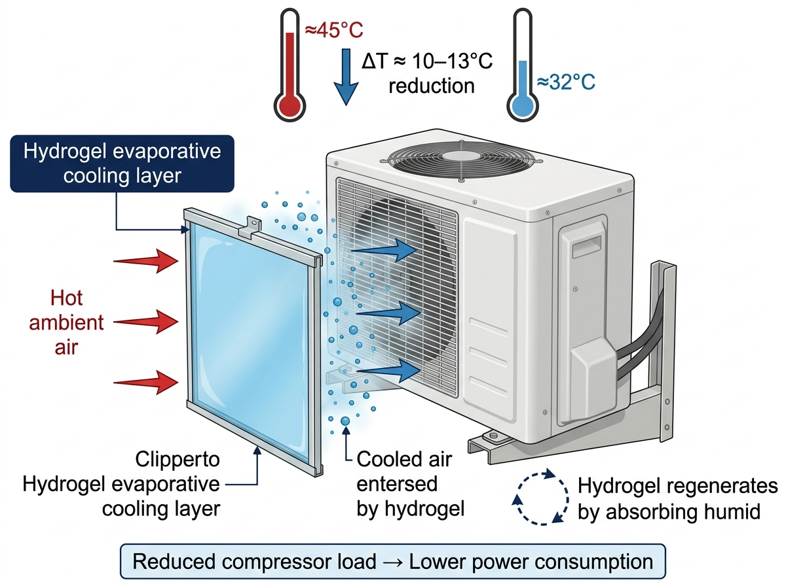
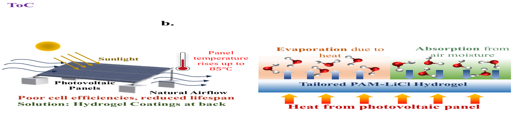
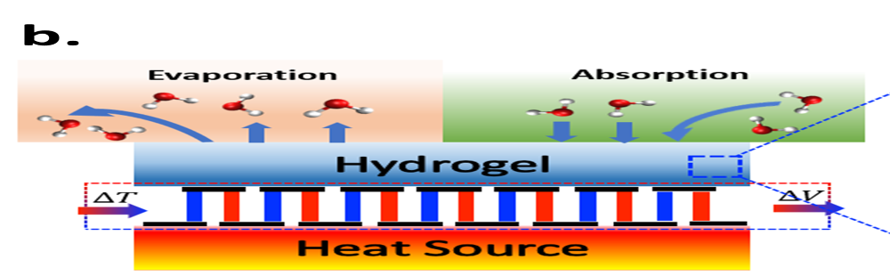
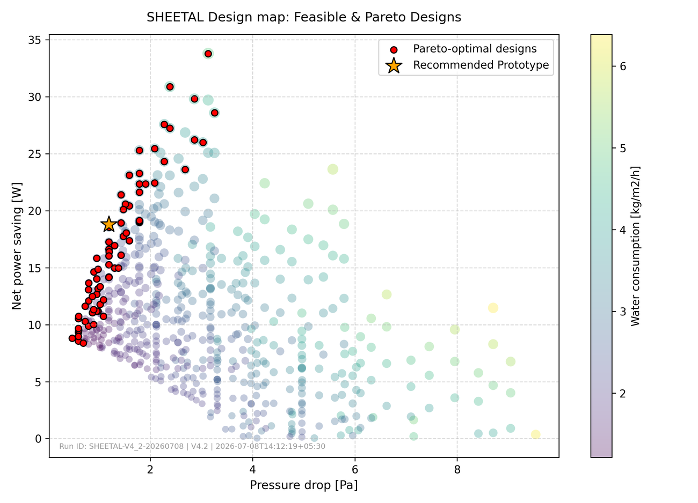
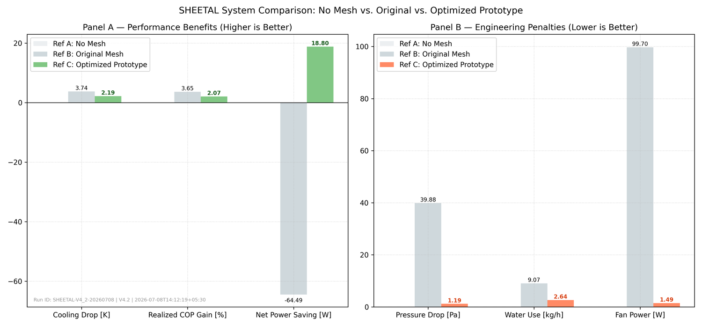
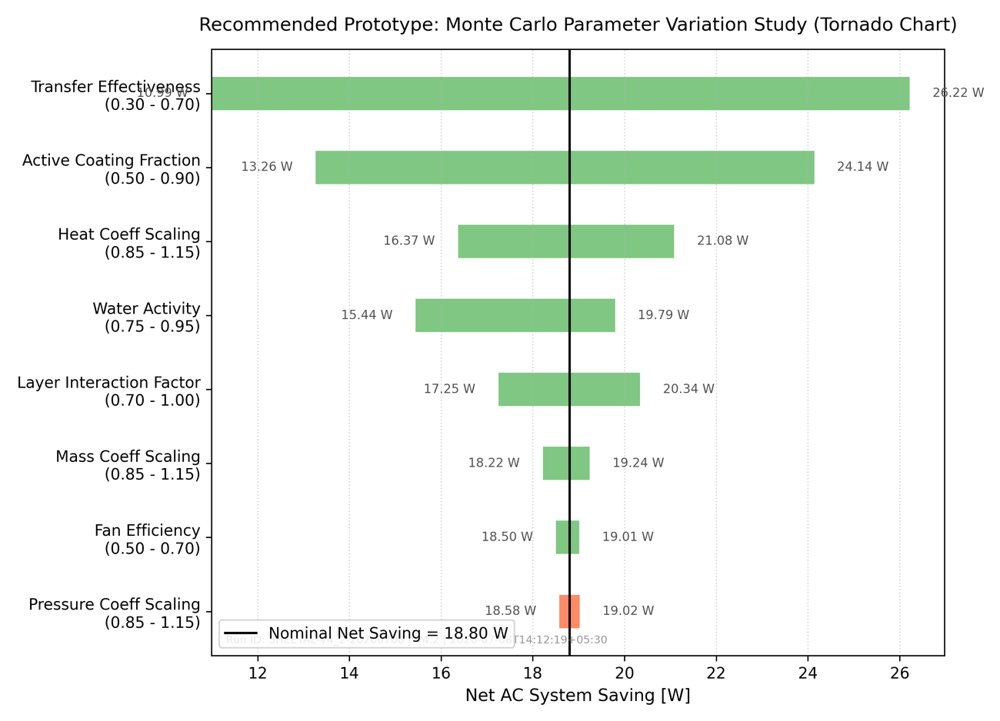
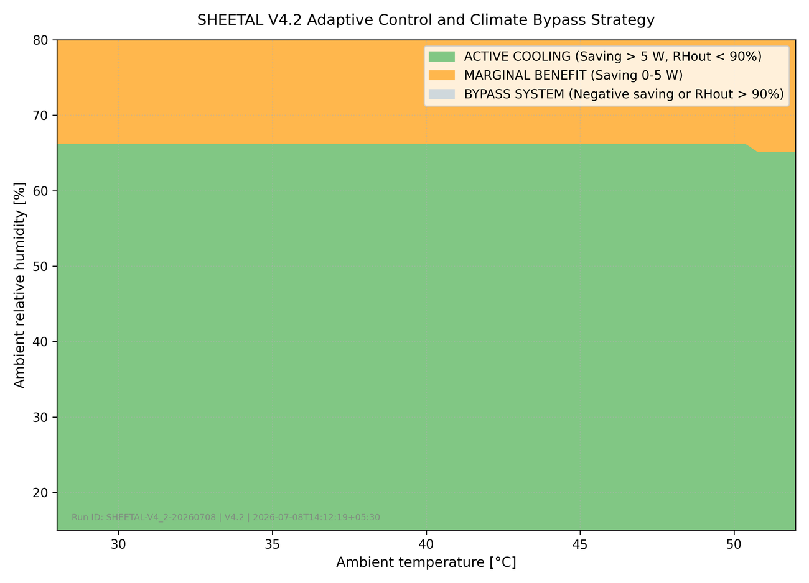

Sustainable Hydrogel-enabled Energy Efficient Thermal Augmentation for Air-conditioning Load reduction
Indian innovation for energy-efficient cooling.
Criterion 1 · Problem Significance
Campus cooling is largely served by distributed split ACs, not centralised chilled water — and split AC efficiency degrades sharply in exactly the hot weather when cooling demand peaks.
The outdoor condenser must reject heat to increasingly hot ambient air, forcing the compressor to work harder — and consume more electricity — precisely when demand is highest. Replacing units is capital-intensive, and most efficiency upgrades need extra energy, water, or maintenance. Even a modest improvement applied across 1000+ units yields substantial cumulative savings and meaningful carbon reduction toward the Institute's net-zero goals.
The Gap SHEETAL Fills
Every conventional fix trades one problem for another — capital cost, water demand, maintenance burden, or marginal impact.
Criterion 2 · Originality & Creativity
A PAM-LiCl hydrogel panel that clips onto the air intake of any split AC outdoor condenser unit — no plumbing, no power, no structural change.
The hygroscopic hydrogel absorbs atmospheric moisture at night and releases it via evaporation during hot daytime periods, cooling condenser inlet air by 4–10 °C.
Combines atmospheric water harvesting with desiccant cooling as a zero-energy AC retrofit. No prior commercial product packages these principles into a passive condenser pre-cooler.
Completely passive — no pump, no water line, no external power, no structural change. Clips onto any condenser grille in under 30 minutes.

Criterion 3 · Technical Feasibility
Like a desert beetle harvesting fog, SHEETAL runs a fully autonomous daily cycle — no valves, no controller, no intervention.
Criterion 3 · Scientific Soundness
Every material property is chosen against literature-anchored evidence, not guesswork.
at 30 wt% LiCl — equilibrium RH 75–85%, enabling evaporation whenever ambient RH < 80%.
grams water per gram polymer — a thin 3 mm panel holds enough water for 15–50 h of continuous cooling.
Analytical estimate at 45 °C, RH 30% — surface cooling of 4–10 K.
Absorbs moisture from humid night air passively — no cartridge replacement.
Free-radical polymerisation of AAm + MBA, LiCl impregnation post-gelation — scalable to sheet format.
Hygroscopic hydrogel sorbents for atmospheric water harvesting — principle basis for the regeneration cycle.
Criterion 3 · Scientific Soundness
SHEETAL adapts an already-validated material platform. The same PAM-LiCl hydrogel chemistry — built and tested by this team — has been experimentally proven in two other Wiley-journal publications, in two different thermal-management applications.

Solar RRL · 2026
Advanced Sustainable Systems · 2026Where SHEETAL's own model is still pre-experimental (see the audit trail below), the underlying hydrogel material and hygroscopic day/night cycling mechanism are not — they have already been built, tested, and independently peer-reviewed by this team, in adjacent applications.
Criterion 3 · Technical Feasibility & Scientific Soundness
The design was selected through a reduced-order model coupling moist-air psychrometrics, Zukauskas wire-bank convection, and Chilton–Colburn mass-transfer analogies across sequential mesh layers.


The 15–20% COP improvement figure quoted throughout this project is the idealized, Carnot-based potential of the condenser inlet temperature drop achieved by the hydrogel layer. Because it matters more to us to be right than to look good, we ran a full internal audit of the reduced-order model before presenting it.
Applying a conservative 50% realization factor — to account for real compressor isentropic losses, wire-overlap wake shielding, and imperfect gel coating coverage — the audited model predicts a more cautious 2.07% realized COP gain (18.8 W net saving) for the recommended prototype geometry, with a Monte-Carlo parameter-variation study (see figure below) showing this is robust across plausible calibration ranges. Our internal review issued a conditional go: the model is valid for comparative and feasibility screening, but absolute power-saving claims require experimental wind-tunnel and field validation — which is exactly what Phase 1–2 of our prototype plan below is designed to deliver.


Criterion 5 · Prototype Quality & Development Stage
SHEETAL is currently at TRL 2, with a fully audited model in hand and a concrete path to lab and field validation.
Synthesise PAM-LiCl sheets (30 wt% LiCl). Measure water uptake, aw, and evaporation rate at 35–45 °C in lab.
Lab-scale air channel (40×20 mm) with heater + hygrometer. Measure ΔT and jevap, validate against the analytical model.
Aluminium frame + gel panel sized for a standard 1.5T split AC (800×550 mm face). Test fit and pressure drop.
Install on 2–3 AC units. Log compressor current, power, and indoor temperature over 2–4 weeks against controls.
Key metrics tracked: ΔTcondenser, ΔWcompressor, COP before vs. after, gel recharge time, daily water balance.
Criterion 4 · Impact Potential
From a single campus building to hundreds of millions of split AC units across the Global South.
Criterion 6 · Business & Implementation Viability
Estimated unit economics and a four-phase go-to-market strategy, from campus pilot to consumer retail.
| Metric | Estimate |
|---|---|
| Material cost (per unit) | ₹250–300 |
| Frame + fitting hardware | ₹200–250 |
| Total manufacturing cost | ~₹500 |
| Retail price (2× markup) | ~₹1,000 |
| Annual electricity saving | ₹1,500–4,000 |
| Simple payback period | < 6 months |
| Panel lifespan | > 3 years (est.) |
| ROI over 3 years | 4–10× investment |
Install on 50 AC units at IIT KGP. Publish performance data. Build credibility with real numbers.
License to 10 IITs / NITs via campus sustainability procurement MoU.
Partner with AC service companies as an add-on retrofit product.
D2C via e-commerce. Self-install kit format with an annual refill-cartridge subscription.
Revenue model: product sale + annual refill subscription, with institutional bulk pricing for colleges and housing societies.
Team MEGHDOOT
School of Energy Science and Engineering, IIT Kharagpur.
SHEETAL is not just an idea — it is a thermodynamically grounded, low-cost, and passively scalable solution ready to begin deployment within IIT Kharagpur this academic year.